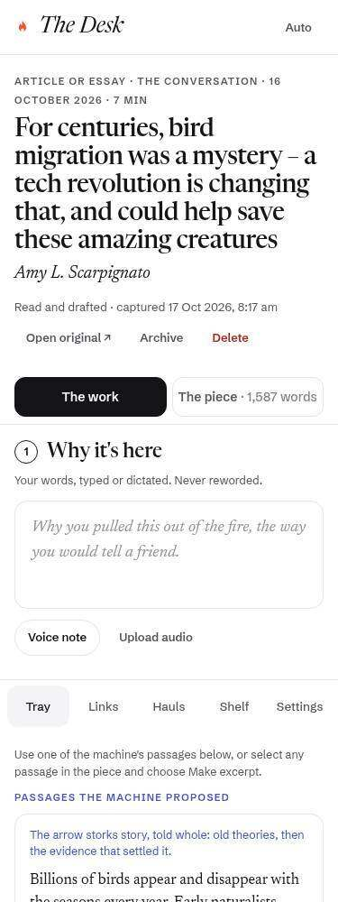
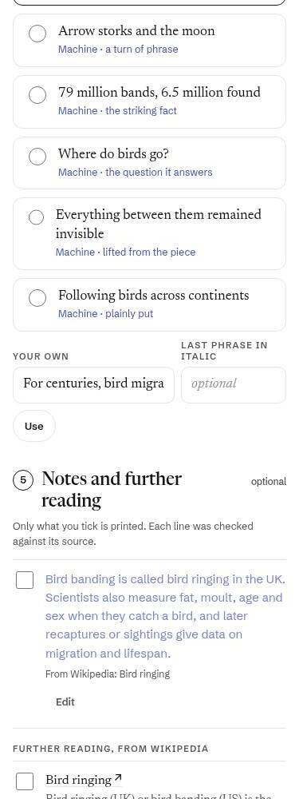
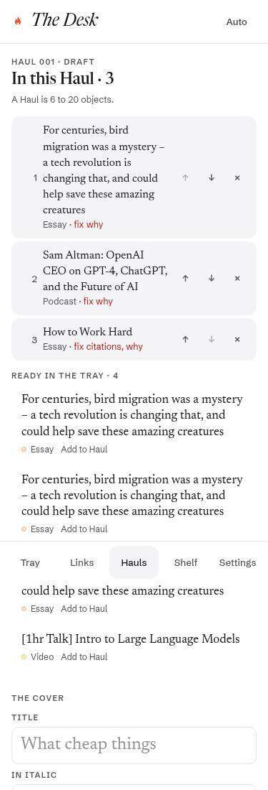

Your part first, then the machine's offer as one button. Finished steps are single lines. Where it stands sits under the title.
Fighting for Growth
Why did the Industrial Revolution begin in Britain? The question feels all the more relevant now that we’re staring at another technological revolution, artificial intelligence, that might dwarf it.
I was reading this really clever paper by Bruno Caprettini, Alex Trew and Hans-Joachim Voth. They start by laying out the two competing explanations.
Q. Do your farmers employ fewer hands than they did before those machines were introduced?
A. Considerably. […]
Q. How soon after their introduction did they begin to employ fewer hands?
A. Directly they began working them; instantly.
 Martinus Schouman, 1806
Martinus Schouman, 18063 notes, 4 Wikipedia cards and 9 big ideas. Only what you keep is printed.
- The Swing Riots of 1830 began with the destruction of threshing machines in East Kent…
- Impressment
- Threshing machine
More: blocks, connections, redraft, archive, delete
The screen it replaces

The machine's offers, one at a time: the line, then where it comes from, word for word. Thumb-sized Keep and Skip at the bottom, or swipe.
The Swing Riots of 1830 began with the destruction of threshing machines in East Kent and spread across southern England and East Anglia.
The Swing Riots were a widespread set of uprisings in 1830 by agricultural workers across Southern England and Eastern England in protest of agricultural mechanisation and harsh working conditions.
The screen it replaces

The Haul in its printed order. What needs you is marked where it sits, with a link. Hold an item to move it. Publish is the one button, and says what stands in its way. (The marks below are made up for the comp.)
The Uses and Abuses of History
Linux and Wikipedia, the dilettante twice over, the world’s falling birth rates, press gangs and threshing machines…
- 1✓From Linux to WikipediaA nice piece on the success of decentralized projects like Linux and Wikipedia.
- 2✓In Praise of the DilettanteI love the word dilettante. I think I fell in love with it as soon as I discovered it.
- 3LookThe Likelihood of Persistently Low Global FertilityAn interesting paper by Michael Geruso and Dean Spears on falling fertility rates.2 Wikipedia cards waiting for a keep or skipGo
- 4✓Revenge of the DilettantesWhile writing about Miller’s essay, I wanted to add a note on what AI means for a dilettante life.
- 5✓Fighting for GrowthWhy did the Industrial Revolution begin in Britain?
- 6FixRobert Caro on the Dwarkesh PodcastWhenever an author or book comes up, the one thing I can always say is, “Oh, that’s on my reading list.”No date. The piece prints with when it was published.Go
- 7LookThe Epistemic Crisis Behind the AI CrazyA brilliant post by Nils Gilman on a topic I’ve been thinking about nonstop for a while.A paragraph of your note reads word for word from the pieceGo
- 8✓The End of the InternetThe Internet was once nice, weird, wacky and wonderful. Now it sucks.
and 8 more
The screen it replaces
